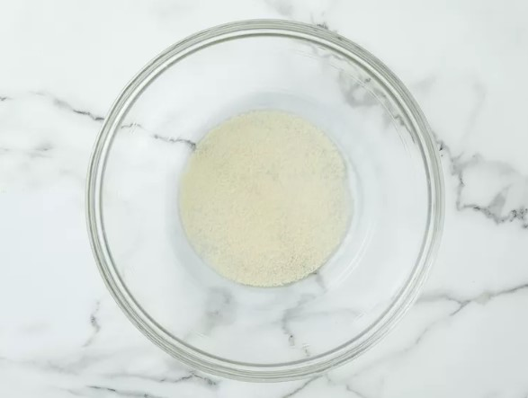
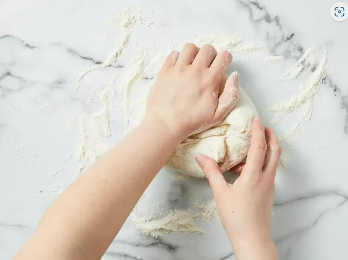
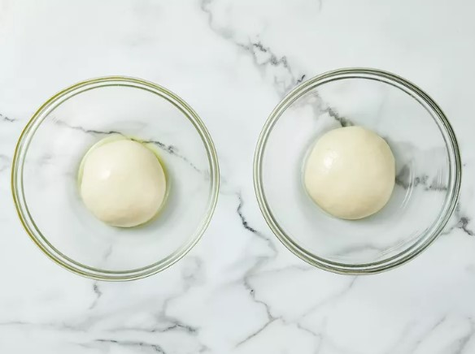
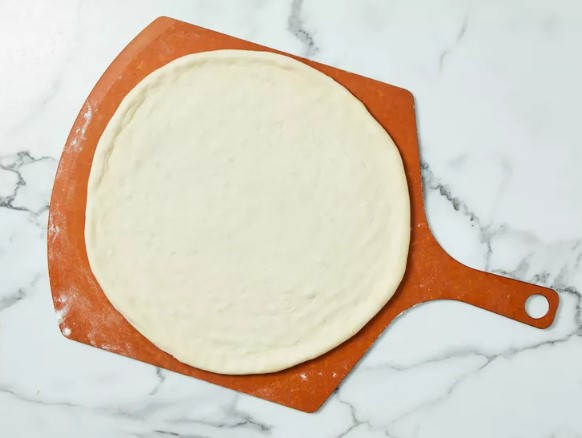
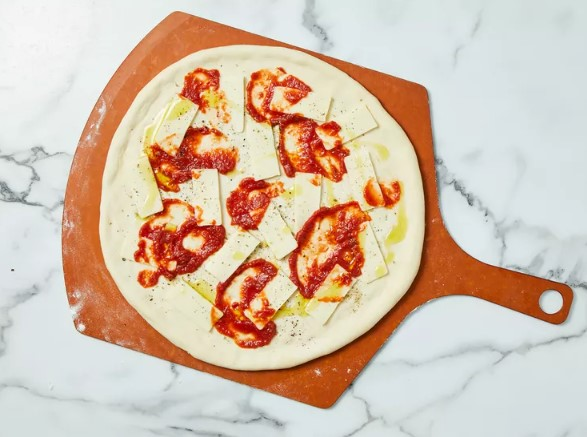
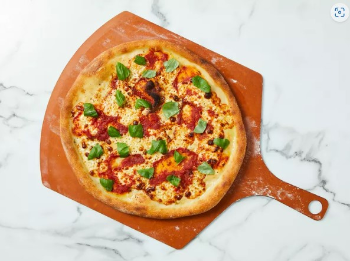

Step 1: Make the dough: Pour warm water into a large bowl, then sprinkle yeast over the top. Let stand for 5 minutes. Stir in cold water and salt. Stir in flour, 1 cup at a time until incorporated.
Step 2: Knead dough on a floured surface until smooth, about 10 minutes.
Step 3: Divide in half and form into two tight dough balls. Coat with olive oil and refrigerate in a sealed container for at least 16 hours. Be sure to use a big enough container to allow dough to rise.
Step 4: Make the pizzas: Remove dough from the refrigerator one hour prior to using.
Step 5: Preheat the oven, with a pizza stone on the lowest rack, to 550 degrees F (288 degrees C). Lightly dust a pizza peel with flour.
Step 6: Prepare the first pizza: Lightly dust one dough ball with flour and stretch gradually until about 14 inches in diameter, or about the size of the pizza stone. Place on the floured peel.
Step 7: Lay 1/2 of the mozzarella on the crust, then sprinkle 1/4 teaspoon oregano and 1/8 teaspoon pepper over the top. Randomly arrange 1/4 cup crushed tomatoes over the pizza, leaving some empty areas, then drizzle 1 tablespoon olive oil over top.
Step 8: With a quick back and forth jerk, make sure dough will release from the peel easily. Place the tip of the peel at the back of the preheated pizza stone, and remove the peel so that the pizza is left on the stone.
Step 9: Bake in the preheated oven until the crust begins to brown, 4 to 6 minutes.
Step 10: Slide the pizza onto the peel and remove from the oven; then slide off the peel onto a work surface. Sprinkle 1/2 of the basil leaves randomly over the pizza. Cut into wedges and serve.
Step 11: Follow Steps 5 through 9 to make the second pizza.